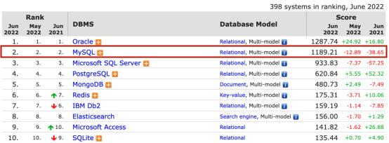
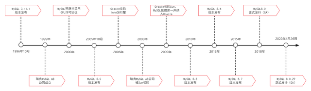
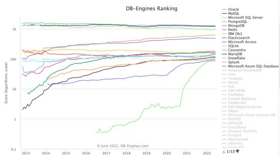
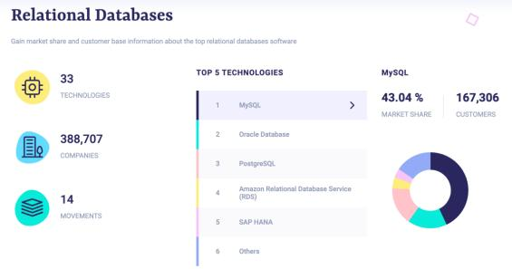
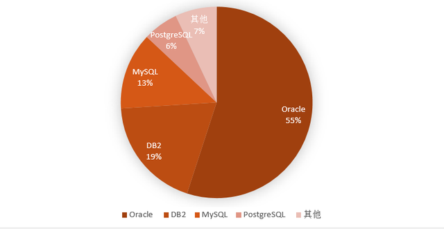
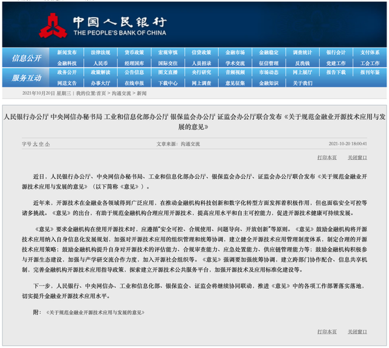

数据库杂谈｜全球“万人迷”MySQL在中国“境遇”如何？
前段时间，笔者与一位资深开发者聊天，得知他作为后端工程师，辗转于多个软件服务公司，所服务的客户涵盖零售、交通、金融、互联网等行业。我问他接触最多的数据库是什么？他脱口而出：“MySQL！”
MySQL可能是很多数据库从业者的启蒙数据库。DB-Engines官网6月最新数据显示，MySQL是全球最受欢迎的开源数据库。在所有数据库排名中，MySQL仅次于Oracle，稳居全球数据库亚军之位。

（图片源自DB-Engines官网）
近年来，开源数据库成为数据库发展的一大趋势，备受关注。今天，我们就来扒一扒开源数据库“课代表”MySQL的前世今生。
数据库“老炮儿”MySQL发家史
（一）数据库“老炮儿”MySQL
MySQL的历史最早可以追溯到1979年，距今已有43年历史。
1996年10月，MySQL的首个稳定版本 3.11.1发布。此时正值互联网发展初期，一切充满着希望。1999年，瑞典MySQL AB公司成立。
进入新世纪，MySQL迈出了重要一步。2000年，MySQL采用GPL（General Public License）许可协议开源。2005年10月，发布了MySQL 5.0，在5.0中加入了游标、存储过程、触发器、视图和事务支持等功能模块。至此，MySQL正式进入高性能数据库行列。
2006年，Oracle收购InnoDB引擎，这深刻影响了后来MySQL的发展——因为MySQL被卖身两次后归于Oracle麾下。2008年，瑞典MySQL AB公司被Sun收购。次年，Sun被Oracle收购，MySQL数据库被一并纳入Oracle，进入Oracle MySQL时代。2010年发布的MySQL5.5版本中，将其默认的存储引擎由MyISAM更换为InnoDB。
进入移动互联网时代后，MySQL发布了稳定的经典版本：2013年发布MySQL 5.6；2015年发布MySQL 5.7；2018年4月，MySQL 8.0正式发行（GA）；MySQL的最新版本8.0.29于2022年4月26日正式发行(GA)。

（MySQL数据库发展历程图）
（二）流行：数据库领域的“万人迷”
当您浏览本文的时候，后台很可能由MySQL数据库在提供支撑。MySQL的应用十分广泛。新世纪初期，未来的互联网巨头刚刚萌芽，但是商业数据库太过昂贵，对技术人员的能力要求也较高，开源数据库成为大家的新选择。
全球范围内，美国雅虎公司率先大规模使用MySQL数据库。在其影响下，海内外互联网公司开始自己的MySQL应用之路，如Google、Facebook、阿里巴巴、百度、腾讯等公司以及90%以上的互联网公司都会或多或少地应用MySQL数据库。
自此，以 MySQL 为代表的开源数据库产品引领了数据库技术发展方向，在解决客户需求的同时，也培育了客户使用习惯，从而赢得了大量客户。
无论在海外还是中国，MySQL都是最流行的开源数据库，拥有广泛的受众，是数据库领域的“万人迷”。从DB-Engines流行度趋势图可以看到，MySQL与Oracle几乎不相上下。

（图片来自DB-Engines官网）
与此同时，MySQL也是全球最受欢迎的关系型数据库之一。根据Slintel网站的统计数据，在全球关系型数据库市场中，MySQL市场份额最高，达到43.04%，Oracle仅为16.76%。

数据来源：Slintel网站
中国信息通信研究院《数据库发展研究报告（2021年）》指出，我国金融行业各类数据库应用占比为Oracle 55%、DB2 19%、MySQL 13%、PostgreSQL 6%，其他7%。

图片源自《数据库发展研究报告（2021年）》
那么，MySQL是如何成为数据库领域的“万人迷”呢？
（三）借势互联网，开源、免费成就全球最受欢迎的关系型数据库
MySQL能成为全球最受欢迎的关系型数据库，主要是搭上了互联网爆发时代的快车。MySQL本身产品能力过硬，凭借开源、免费的优势，从Oracle、DB2等成熟的商业数据库丛林中，硬是杀出了一条血路。
开源与互联网相互促进，彼此成就。开源软件可以看作是分布式协作的标杆，即利用全人类的智慧群策群力。源代码开放具备全球共享、免费等特点，使更多人参与到软件开发中。而互联网的发展则打破了时空的界限，将全球链接到一起，使全球分布式协作更高效便捷。MySQL数据库凭借其性能稳定、成本低、高可用、生态成熟等优势，俘获了无数开源贡献者的心，成为数据库领域的“万人迷”。
从MySQL的发展史不难看出，MySQL数据库的核心动力源于开源贡献者。即便2009年，MySQL创始人Monty Widenius离开Sun独自进行MySQL重要分支MariaDB的开发，仍无法撼动MySQL全球第一开源数据库的地位。但近年来，随着MySQL兼容外部开源贡献者的态度日趋保守，MySQL原有拥趸转投MariaDB、Percona Server，导致MySQL占有率逐渐下降也是不争的事实。
MySQL与中国的故事
（一）曾经的MySQL中国研发中心和MySQL中国教育中心
中国最早的一批MySQL数据库从业者一定会记得MySQL中国研发中心和MySQL中国教育中心。早在2006年，中国企业北京万里开源软件有限公司（简称“万里数据库”）就与瑞典MySQL AB公司成立了MySQL中国研发中心和MySQL中国教育中心，共同推动MySQL在中国的发展。万里数据库与MySQL的合作直至2009年底终止。此后，MySQL的服务授权由Oracle授予，国内也有不少企业获得了MySQL的技术服务授权，其中较为典型的厂商如爱可生。
MySQL中国研发中心揭牌成立
（二）国产数据库中MySQL技术路线占比高
国内最早的一批互联网先行者是推动MySQL在中国发展的重要力量。
以互联网巨头阿里巴巴为例，当年基于成本与安全的考虑，提出“去IOE”的口号。其中去“O”就是以MySQL替代Oracle。基于MySQL发展出的AliSQL独立分支，在阿里去“O”工程中发挥了重要作用。而基于对MySQL改造的实践，阿里巴巴影响和带动了国内互联网公司应用MySQL的热潮。
MySQL 是目前世界上最流行的开源数据库软件，市场占有率巨大，这是不可否认的事实。我们再从数据库产品本身、用户使用等方面看看国内MySQL的发展情况。
当前是国产数据库发展的黄金时期，百花齐放，异彩纷呈。我国关系型数据库产品多数基于 MySQL 二次开发而来。根据中国信息通信研究院《数据库发展研究报告（2021年）》，截止到2021年6月，关系型数据库中有23个是基于开源数据库 MySQL 进行二次开发的，占关系型数据库的比例为 28.40%。
国内各行各业的终端用户也大量使用了 MySQL 数据库。以金融行业为例，据调研，90%的金融机构已广泛应用或试用开源软件。开源数据库方面，超9成金融机构应用了MySQL数据库。目前，MySQL数据库已在金融行业得到了规模化应用。工商银行、建设银行、招商银行、民生银行、中国银联、泰康保险6家金融企业的MySQL数据库投产节点规模超过1000个。其中，中国银联、工商银行、招商银行甚至超过4000个节点。
与之相对应的是国内围绕MySQL生态的长期投入，如基础软硬件设施、适配 MySQL 的应用软件开发、MySQL 生态的人才培养等。在此基础上，国内已形成了庞大的围绕 MySQL 的软件生态和人才生态，大量的终端用户把 MySQL 作为首选数据库软件进行使用。
虽然MySQL的开源协议会造成业内的一些担忧，但正确的做法不是放弃，而是规范应用和技术掌控，而且以MySQL为代表的开源数据库也迎来了政策东风。
（三）国家政策大力扶持开源项目，为国内厂商保驾护航
中国信息通信研究院《开源生态白皮书2021》指出，我国已成为全球开源生态的重要贡献力量，参与国际开源社区协作的开发者数量排名全球第二。国内开源技术空前发展的同时，具有引领性、保障性的政策出台也带来了利好。
2021年，开源被首次写入《中华人民共和国国民经济和社会发展第十四个五年规划和2035年远景目标纲要》，明确提出支持数字技术开源社区等创新联合体发展；同年10月，央行、网信办、工信部、银保监会、证监会联合发布《关于规范金融业开源技术应用与发展的意见》，为开源在金融业的应用提供政策指引；工信部也印发《“十四五”软件和信息技术服务业发展规划》，系统布局“十四五”开源生态发展；2022年，国务院又印发《“十四五”数字经济发展规划》，提出支持具有自主核心技术的开源社区、开源平台、开源项目发展等规划。

相信这些纲领性的政策及后续的实施指南将对我国开源技术的良性发展起到保驾护航的作用。随着国家对开源技术的重视，开源项目及开源协议的合规性也必将作为重点规范内容，以保障我国企业对开源技术的应用。
（四）国内MySQL技术路线发展的未来
近年来，国内基于MySQL技术路线或兼容MySQL的社区逐渐兴起。相比国外MySQL开源社区，国内MySQL技术相关的社区主要由国内厂商、技术人员参与并进行代码贡献，相对更自主、安全、可控。目前，国内开源数据库社区中，明确提出基于MySQL路线的开源社区并不多，大多是兼容MySQL的开源数据库社区，如：TiDB社区、OceanBase社区。
GreatSQL社区是国内为数不多的、明确基于MySQL路线且较为活跃的开源数据库社区。该社区成立于2021年，由万里数据库发起。从官方资料可以看到GreatSQL分支与MySQL官方的差异及优势特性。GreatSQL开源数据库是适用于金融级应用的国内自主MySQL版本，专注于提升MGR可靠性及性能，支持InnoDB并行查询等特性，可以作为MySQL或Percona Server的可选替换，用于线上生产环境，且完全免费并兼容MySQL或Percona Server。据了解，GreatSQL社区已覆盖1500+技术开发者，被Gitee评为“最有价值开源项目”。
除MySQL数据库技术分支项目本身外，MySQL技术周边工具的开源项目在国内出现更早，如爱可生开源社区。它并不对数据库本身进行改造开源，而是对数据库周边工具进行开源，这也是繁荣国内MySQL技术路线的一种积极力量。
以MySQL为代表的开源数据库引领了一个时代，所沉淀下的优秀资产和强大生态也会继续在国内数据库市场上发光发热。相信在国家政策的引领下，在国内无数MySQL技术人员的努力贡献下，国产MySQL技术路线的数据库乃至整个开源数据库，未来都将大有可为。